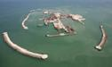
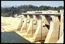
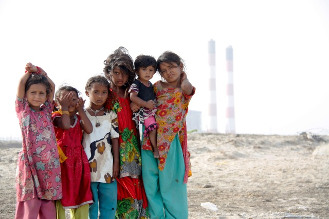
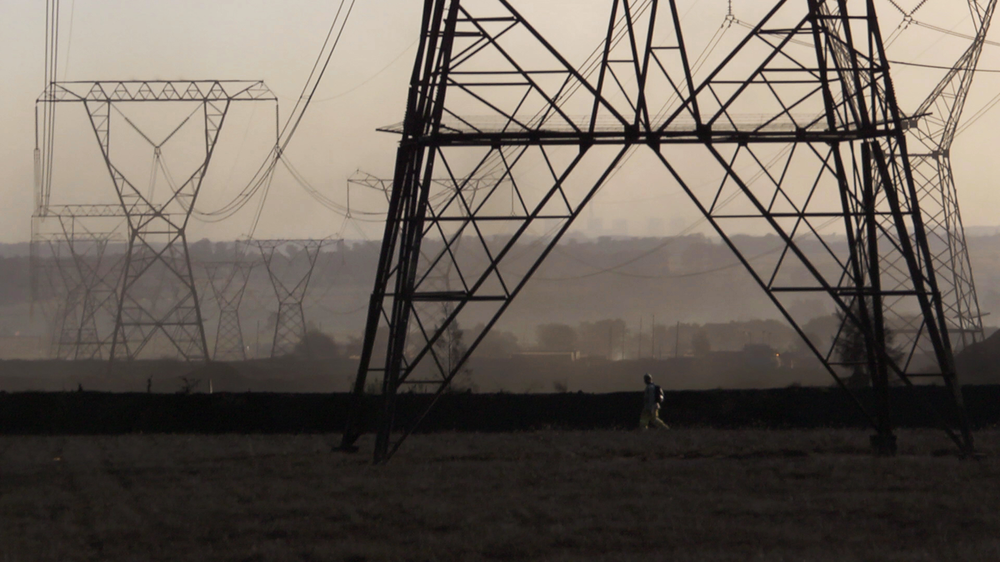

BNP Paribas
Description
BNP Paribas est une des plus grosses banques en Europe, avec une présence importante à travers le monde. Ses activités se rassemblent autour de trois grands pôles : banque de détail, Banque de Financement et d'Investissement, et gestion d'actifs.
Appréciation générale
BNP Paribas est non seulement la banque française la plus présente dans les paradis fiscaux, de fraudes et de manipulations, mais elles est aussi la première banque française en termes de financements aux énergies fossiles.
Contrairement à ses principales concurrentes Crédit Agricole et Société Générale, on l'a aussi trouvé derrière des entreprises très controversées pour leurs violations extrêmes des droits de l'homme - l'entreprise Drummond responsable de centaines d'assassinats et de disparitions, et financé dans le passé par BNP Paribas, est l'une d'elle.
Par conclusion, BNP Pariabs est la banque française dont les activités de financements et d'investissement ont le plus gros impact sur l'environnement et les populations. Elle mérite donc le bas de notre classement, à l'opposé de la Nef.
A l'instar de ses concurrentes Crédit Agricole et Société Générale, BNP Pariabs a adopté des politiques sectorielles destinées à encadrer ses activités dans les secteurs à risque comme les énergies fossiles, le nucléaire, l'armement, etc.
Mais ces politiques ne changent qu'à la marge les activités de la banque et ne suffisent pas à les rendre compatible avec des sociétés soutenables.
Un exemple, BNP Paribas adoptait en novembre 2015 des mesures de réduction de ses soutiens au charbon. Deux mois plus tard, elle participait au financement d'une centrale à charbon, Vinh Tan Power Centre, et d'une ligne de transmission, Song MayTan Uyen, au Vietnam.
Si vous êtes client(e) de BNP Pariabs ou d'une de ses filiales, envoyez-lui un message et aidez-nous à lui demander d'aller plus loin en mettant fin à tous ses soutiens au charbon.
| Niveau | Commentaires | |
|---|---|---|
| Environnement |  |
BNP Paribas ne prend en considération l'environnement qu'à la marge, n'excluant de ses soutiens que les pires pratiques des activités qui violent le droit de tou-te-s à un environnement sain. |
| Climat |  |
BNP Paribas dit vouloir aligner ses activités avec un scénario 2°C et appliquer un prix carbone à l'ensemble de ses activités. L'application étant incertaine, une certitude demeure: la banque finance toujours le charbon pourtant incompatible avec l'objectif des 2°C. |
| Transparence | |
BNP Paribas rend publiques certaines de ses activités, sélectionnées pour l'image qu'elles renvoient de la banque, mais l'immense majorité reste totalement opaque. |
| Politiques sectorielles |  |
La BN P Paribas a adopté des politiques sectorielles de réduction des risques dans le cadre de ses financements et de ses investissements dans les secteurs à risque - défense, huile de palme et pâte à papier, centrales nucléaires, mines, sables bitumineux, charbon et matières premières essentielles. Très partielles et insuffisantes, ces politiques n'empêchent pas la banque de continuer à financer des projets et entreprises très controversées dans ces secteurs. |
| Energies renouvelables | |
Dans son rapport RSE 2013, la BNP revendique 6,5 milliards d'euros de soutiens aux énergies renouvelables, sans préciser sur combien d'années. Chose certaine, ce montant correspond aux résultats des recherches menées avec Oxfam France sur la période de 2009 à 2014 et représente moins de 9 fois les sommes versées aux énergies fossiles sur la même période. |
| Paradis fiscaux | |
BNP Paribas a 200 filiales dans les paradis fiscaux et judiciaires, et est la première entreprise française par le nombre de filiales offshore. |
| Energies fossiles - charbon | |
Avec 52 milliards d'euros de financements aux énergies fossiles entre 2009 et 2014, dont 14 milliards au seul secteur du charbon, BNP Paribas est de loin le champion français des énergies carbonées. |
| Emissions financées | |
BNP Paribas ne calcule pas ses émissions induites par ses activités de financement et d'investissement. Les Amis de la Terre ont estimé ces émissions à plus de 1360 millions de tonnes d'équivalent CO2 en 2010. |
 Liste noire des projets controversés financés Liste noire des projets controversés financés
|
||
| Nom | Photo | Description |
| Nucléaire |  |
Filière nucléaire. Celle-ci va de l'extraction de l'uranium (par exemple dans les mines du Niger) au retraitement des déchets nucléaires, en passant par l'exploitation de centrales nucléaires et la production d'armes nucléaires. source - |
| Projet pétrolier et gazier de Sakhaline II (Russie) |  |
Menace sur la biodiversité : 130 dernières baleines grises occidentales dans la zone en voie d'extinction. Risque de marée noire. Violation de la loi environnementale russe en 2005 lors du rejet massif de déchets dans la baie d'Aniva. En savoir plus |
| Projet pétrolier de Kashagan (Kazkhstan) |  | Menace sur la biodiversité : Phoque de la Caspienne menacé. Risques techniques liés aux conditions météorologiques extrêmes. Problème d'extraction et de stockage du sulfure et risques pour la santé humaine des mercaptant (gaz toxique). dossier |
| Expansion du barrage de Theun-Hinboun (Laos) |  | Déplacement forcé de près de 5 000 personnes. Plus de 45 000 personnes affectées en aval du barrage. Risque de perte de sources de subsistance : pêche et agriculture, ainsi que l'alimentation en eau potable. dossier |
| Sables bitumineux (Canada) |  |
Entreprises comme Suncor Energy ou Total exploitant les sables bitumineux extrêmement polluant. La production d'un baril de pétrole extrait des sables bitumineux génère trois fois plus de gaz à effet de serre que la production d'un barril classique. source |
| Gaz naturel liquéfié (Papouasie Nouvelle Guinée) | -63.jpg) |
Colossal projet industriel (extraction, transformation et gazoduc) qui vise l’exportation sur les marchés asiatiques : déplacements forcés des populations, violation des droits des communautés indigènes, conflits sociaux et délitement du tissu social, ce projet implique la déforestation massive de zones de conservation et est source d’une pollution dangereuse de l’air, de l’eau et de la terre |
| Centrales à charbon de Medupi et Kusile (Afrique du Sud) |  |
2 méga-centrales à charbon de 4800 MW chacune, qui nécessiteront l'ouverture de 40 nouvelles mines de charbon. Projets très polluants qui profiteront en premier lieu aux multinationales étrangères tournées vers l’exportation. Augmentation du prix de l'électricité pour la population. |
| Mines de Vedanta Resources |  |
Vedanta Resources est une entreprise minière (aluminium, cuivre, zinc, plomb), fortement présente en Inde, Zambie, Australie et Tanzanie. Très controversée en raison de son passif en matière violations de droits de l'homme et de dommages environnementaux, elle a été exclue du Fonds de pension norvégien, un des plus gros de la planète. Elle menace de nombreuses tribus, notamment celle des Dongria Kondh en Inde. |
| Producteurs de gaz de schiste | Entreprises productrices de gaz de schiste (Total, PGNiG, PKN Orlen) : usage de très grande quantité d'eau et de produits chimiques, pollution des nappes phréatiques et impacts sanitaires, risques sismiques. |
|
| Centrale à charbon de Tufanbeyli |  |
Projet de centrale de lignite, un des charbon les plus sales et les plus émetteurs, qui causera la perte de 564 ans de vie par an en raison des morts prématurées, et des dizaines de milliers de maladies respiratoires tous les ans. La centrale sera alimentée par une mine qui sera développée sur 90% des terres agricoles dans une région dépendante de l'activité agricole. Le projet promet des violations de droits des populations, des pollutions environnementales et menace les zones protégées environnantes. |
| Terminaux portuaires d\'exportation de gaz et de charbon |  |
Terminaux construits en face de la zone protégée de la Grande Barrière de corail inscrite au Patrimoine de l'Unesco. L'industrialisation de la côte menace les habitats critiques pour la survie de plusieurs espèces protégées comme les baleines à bosses et tortues migratrices. Elle nécessite le dragage de milliers de mètres cubes de fonds de mer qui, avec l'explosion du traffic maritime pour l'exportation du gaz et du charbon, menace la survie du plus grand récif corraillien au monde. |
| Centrale à charbon de Tata Mundra (Inde) |  | Avec 30 millions de tonnes de CO2 émises par an, la centrale de Tata Mundra, plus grosse centrale du pays, en est le 3ème émetteur de GES. Le projet qui a entraîné la destruction de mangroves émet aussi des métaux lours qui aggravent les problèmes sanitaires des populations déjà paupérisée par le projet qui entraîne aussi la déplétion des stocks de poisson dont elles dépendent |
| Infrastructures charbon au Vietnam |  | La COP21 passée, BNP Paribas n'a plus de raison de ne pas soutenir la construction de la centrale Vinh Tan Power Centre et de la ligne de transmission Song MayTan Uyen au Vietnam...si ce n'est ces propres engagements à ne pas aggaver l'intensité carbone des pays et à inciter à la diversification de ses clients, deux choses incompatibles avec ces projets qui font partie d'un programme visant à faire passer le charbon de 35 à 51 % dans le mix énergétique du pays. |
ATTENTION : Ces projets controversés ne constituent que quelques exemples de tous ceux connus des Amis de la Terre dans lesquels BNP Paribas est impliqué. Vous pouvez ainsi en découvrir d'autres sur le site Secrets bancaires et consulter le profil de cette banque sur le site de BankTrack.